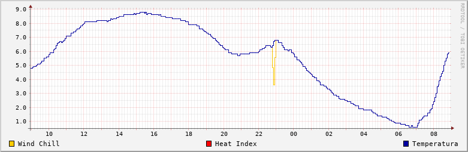
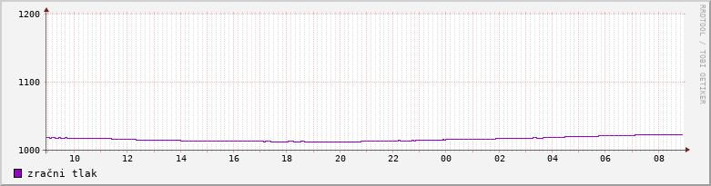

Zadnja meritev: 25.10.2026 ob 15:50:05
Ozračje
| temperatura: | 8.6 °C |
| zračni tlak: | 1013.2 hPa |
| vlažnost zraka: | 86% |
| rosišče: | 6.4 °C |
| občutek mraza: | 8.6 °C |
Veter
hitrost:
0.0 km/h (0.00 m/s)
smer:
WNW oz. 292.5 °
0.0 km/h (0.00 m/s)
smer:
WNW oz. 292.5 °
Padavine
| padavine v zadnji uri: | 0.00 mm |
| padavine zadnjih 24h: | 0.00 mm |
| višina snežne odeje: | cm |
Slika v živo
V živo iz Kosez (pogled proti JZ):

V živo iz Kosez (pogled proti JZ):
Grafični prikaz
Gibanje današnjih vrednosti temperature in občutka mraza:
Dnevna statistika
Gibanje današnjih vrednosti temperature in občutka mraza:


Gibanje današnjih vrednosti zračnega tlaka: 

| minimum | maksimum | povprečna vrednost | |
| temperatura: | 3.5 °C | 8.8 °C | 5.4 °C |
| tlak: | 1013.0 hPa | 1021.1 hPa | 1017.9 hPa |
| vlaga: | 84.0% | 94.0% | 90.8% |
| rosišče: | 2.4 °C | 6.6 °C | 4.0 °C |
| občutek mraza: | 3.5 °C | 5.4 °C | |
| toplotni indeks: | 8.8 °C | 5.4 °C | |
| hitrost vetra: | 4.3 km/h | 0.3 km/h | |
| padavine v 1h: | 0.00 mm | 0.00 mm | |
| minimum | maksimum | |
| temperatura: | -15.90 °C (25.01.2006, 06:22:06) |
38.60 °C (08.08.2013, 17:24:09) |
| zračni tlak: | 974.50 hPa (30.01.2015, 09:54:07) |
1046.50 hPa (20.01.2020, 21:48:05) |
| vlaga: | 16.00 % (24.03.2022, 16:00:09) |
98.00 % (16.12.2019, 16:00:09) |
| rosišče: | -20.10 °C (25.01.2006, 18:44:02) |
24.00 °C (31.07.2020, 14:06:11) |
| toplotni indeks: | 41.20 °C (04.08.2017, 15:36:07) |
|
| občutek mraza: | -24.70 °C (03.02.2012, 08:50:04) |
|
| hitrost vetra: | 60.8 km/h (05.02.2020, 15:21:17) |
|
| sunek vetra: | 64.0 km/h (05.03.2015, 22:56:08) |
|
| padavine v 1h: | 64.75 mm (11.07.2021, 20:10:52) |
|
| padavine v 24h: | 133.05 mm (17.09.2010, 21:04:08) |
|
| višina snežne odeje: | 60 cm (24.02.2013) |
|
| najzgodnejše sneženje in snežna odeja: | 3 cm (28.10.2012) |
|
| najpoznejše sneženje in snežne odeja: | 8 cm (13.05.1978) |
Opozorilo
Meteorološki podatki vremenske postaje Ljubljana Koseze so neuradni, meteorološka postaja sama pa ni del državne mreže Agencije Republike Slovenije za okolje (ARSO), je pa vključena v Vremensko društvo ZEVS. Prikazani podatki so izmerjeni točno, vendar so zgolj informativni in nimajo značaja uradnega podatka. Podatke meri vremenska postaja "Lacrosse technology WS2300" od 25.01.2006 dalje.
Opozarjamo, da ne prevzamemo odgovornosti za morebitno nastalo škodo, ki bi nastala zaradi odločitve, sprejete na osnovi teh podatkov!
Meteorološki podatki vremenske postaje Ljubljana Koseze so neuradni, meteorološka postaja sama pa ni del državne mreže Agencije Republike Slovenije za okolje (ARSO), je pa vključena v Vremensko društvo ZEVS. Prikazani podatki so izmerjeni točno, vendar so zgolj informativni in nimajo značaja uradnega podatka. Podatke meri vremenska postaja "Lacrosse technology WS2300" od 25.01.2006 dalje.
Opozarjamo, da ne prevzamemo odgovornosti za morebitno nastalo škodo, ki bi nastala zaradi odločitve, sprejete na osnovi teh podatkov!